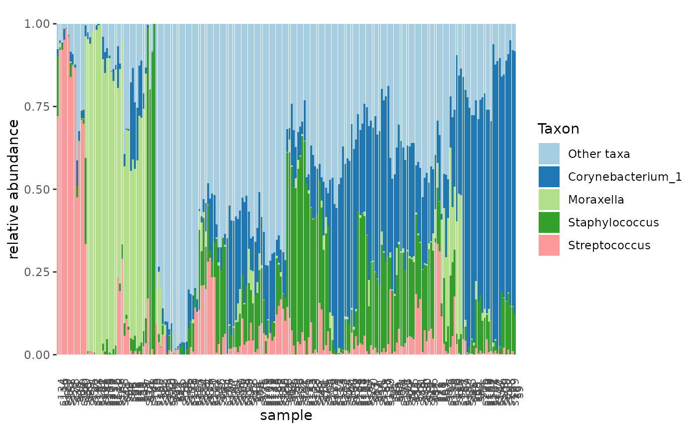

add_rel_abundance() determines the most abundant taxa and assigns
them a color for consistent color codes of each taxon in visualizations.
A rank can be supplied to aggregate colors higher than the current rank.
Usage
add_taxon_name_color(
ta,
method = "mean_rel_abundance",
n = 12,
samples = NULL,
taxa = NULL,
rank = NULL
)Arguments
- ta
A tidytacos object.
- method
The method by which to arrange the taxon names. Currently only mean_rel_abundance.
- n
An integer denoting the amount of most abundant taxa to display. Capacity at 12.
- samples
An optional vector of sample_id's of interest.
- taxa
An optional vector of taxon_id's of interest.
- rank
An optional rank to aggregate taxa on.
See also
Other taxa-modifiers:
add_mean_rel_abundance(),
add_prevalence(),
add_taxon_name()
Examples
# display the 5 most abundant taxa at genus lvl
urt %>% add_taxon_name_color(n=5, rank='genus') %>% tacoplot_stack()
